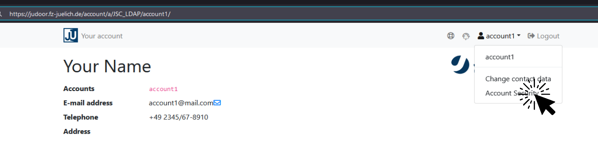
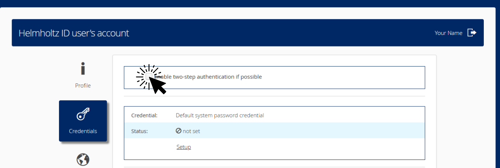
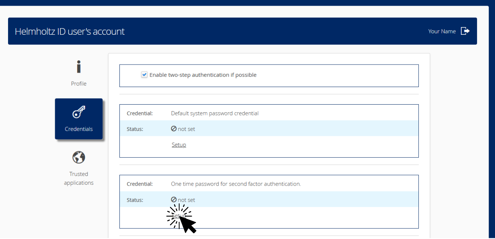
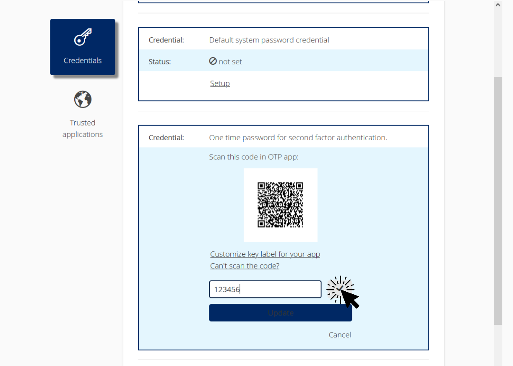

2-Factor authentication
Introduction to 2-Factor Authentication
Introduction
2-Factor Authentication (2FA), sometimes referred to as two-factor verification, is a security method in which you provide two different authentication factors to identify yourself at login. This process is performed to better protect both your credentials and the resources that you can access.
In the first login step, you start with the usual entry of a good password. The service then confirms the correctness of the password entered. This does not, however, lead directly to the desired entrance - but to a further barrier.
The second login step prevents unauthorized third parties from gaining access to your account just because they might have stolen your password. A quite common 2nd-factor is a One-Time Password (OTP) generated by a so-called OTP-App you install and initialize once on one of your personal devices. This OTP-app then provides (in our case every 30 seconds) a new one-time password that needs to be entered on the login page.
Basic Principle
These two factors for authentication combine the building blocks knowledge and possession in the login procedure.
- Knowledge - The secret knowledge is the password you enter.
- Possession - With the one-time password you show that you are in possession of a certain device (e.g., your smartphone), because only the OTP-App, installed on that device, can generate it.
Source: Bundesamt für Sicherheit in der Informationstechnik
Algorithm
The OTP-App can calculate personal one-time passwords completely autonomously from the outside world using a standardized and open algorithm for the generation of Time-based One-Time Passwords (TOTP).
The TOTP algorithm was published in 2011 by the Internet Engineering Task Force (IETF) as RFC 6238. The TOTP algorithm is a hash function in which a secret code is hashed together with the current time.
Behind the hash function is the HMAC-based One-time Password Algorithm according to RFC 4226 - in simple terms nothing more than a standard that forms a hash in a certain way.
The calculation includes both a "secret initialization code", that is known to both the server and the client, and the current time. The final one-time password is generated from these two inputs and is valid for a certain period of time (in our case for 30 seconds). The procedure can be implemented in such a way that slight differences in time between client and server are accepted.
Hence, any one-time password is time-based, calculated locally, and always unique.
Two-factor authentication is not implemented by Jupyter4NFDI or JSC-Login. Instead, you need to enable it in JuDoor (if you are logging in with a JSC account) or through the Helmholtz ID. Below, we will outline the activation process for both services.
Setup
2-Factor Authentication (2FA) better protects both your user credentials and the resources that you can access. JuDoor and Helmholtz ID both use the time-based One-Time Password (OTP) generated by an OTP-App as a 2nd factor.
Install an OTP-App
On one of your personal devices (e.g., your smartphone), install an OTP-App:
- FreeOTP (iOS, Android)
- KeeWeb (Linux, macOS, Windows, Online)
More Apps. Free, but closed source:
- Authy (iOS, Android, Windows, macOS, Linux)
- Protectimus Smart OTP (iOS, Android)
- Google Authenticator (iOS, Android )
- Microsoft Authenticator (iOS, Android, Windows 10 Mobile)
Option A: JuDoor
- Visit JuDoor and sign-in using your JSC account.
-
In the top right corner, open the dropdown menu and click on Account Security.
 -
Click on Start MFA Setup...
- Scan the QR Code (for OTP-App on phones), or enter the Secret into your installed OTP-App.
- Enter your current JSC account password into Current password for account1.
- Enter the current One-Time-Password (generated by your OTP-App) into the field below.
- DOWNLOAD AND PRINT THE SHOWN RESET CODES
Option B: Helmholtz ID
- Visit Helmholtz ID and sign-in using your home IdP.
-
Select Credentials in the left sidebar.

-
Activate Enable two-step authentication if possible
 -
Click Setup for One time password for second factor authentication
 -
Scan the QR Code (for OTP-App on phones), or click Can't scan the code and enter the secret into your installed OTP-App.
- Enter the current One-Time-Password (generated by your OTP-App) and click on the checkmark.

Disable 2-Factor authentication
To disable 2FA you have to disable it at JuDoor / Helmholtz ID.
JuDoor
- Visit JuDoor and sign-in using your JSC account.
-
In the top right corner, open the dropdown menu and click on Account Security.
-
Click on Disable MFA...
- Option A: Use second factor - requires your OTP-App.
Option B: Use reset code - requires your reset codes.
Helmholtz ID
- Visit Helmholtz ID and sign-in using your home IdP.
-
Select Credentials in the left sidebar.
-
Disable Enable two-step authentication if possible
You can disable 2FA on Helmholtz ID, but you cannot delete the secret yourself. For assistance with removal, please contact their support team ( support at hifis.net ).